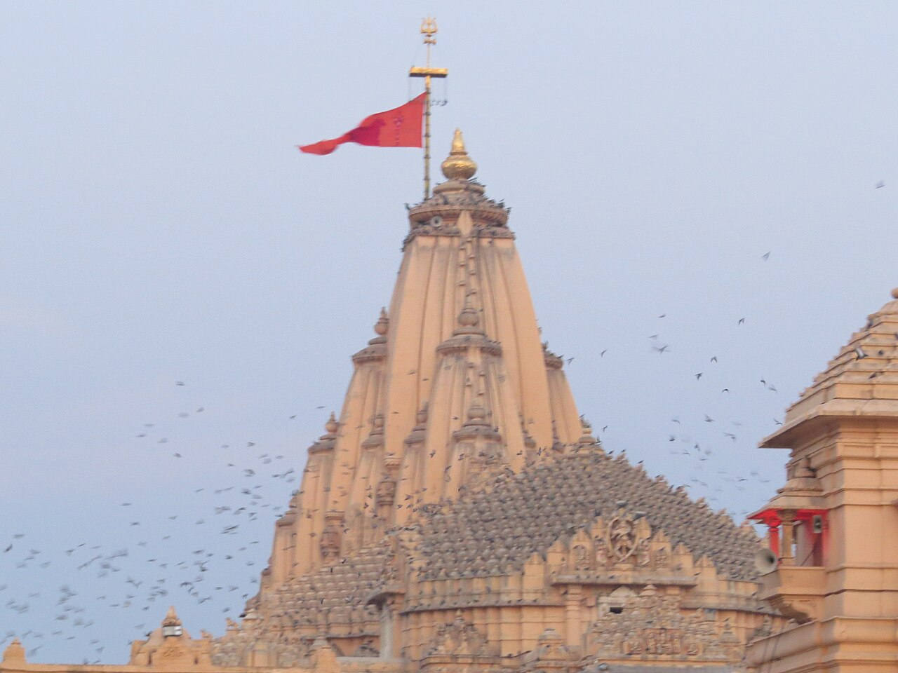

Wikimedia Commons · CC BY-SA 4.0 ⇗
Sthala Puranam
Prabhas Patan — named for 'prabhas', the splendour of Shiva — on the shore of Saurashtra where the Saraswati flowed into the sea, held the first of the twelve Jyotirlingas. The name Somnath recalls the Moon God Soma, who worshipped Shiva at this shore to be freed from a curse.
Explanation
According to the Puranas, Daksha, the father of the Moon's first beloved, cursed Chandra with waning. The Moon prayed at Prabhas, and there Shiva relieved him and taught the meaning of auspiciousness in the waning and waxing years. The temple has been destroyed and rebuilt many times over its long history, each reconstruction by a celebrated dynasty; the present structure was raised in 1951 on the site of older temples. The linga is installed facing the sea, which washes the outer walls of the shrine.
Why the temple is revered
Somnath stands first in the Dwadasha Jyotirlinga stotram ('Saurashtre Somnatham') and carries the memory of the Moon's redemption. It is revered both as a prana-linga of the nation's spiritual biography and as a still-living centre of Shaiva worship on the western sea. The ocean, the moonlight and the temple's long memory of rising again have made it an emblem of restoration.
🕉 Story
According to tradition, Chandra, the Moon God, worshipped Shiva at Prabhas to obtain relief from a curse associated with Daksha.
✨ Significance
Somnath is traditionally regarded as the first of the twelve Jyotirlingas and occupies an important place in India's religious and historical memory.